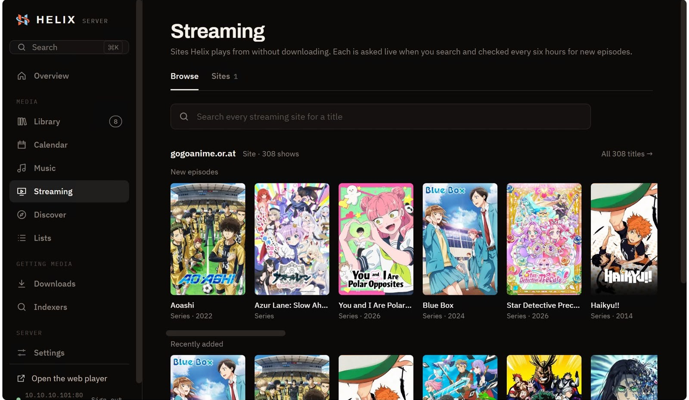
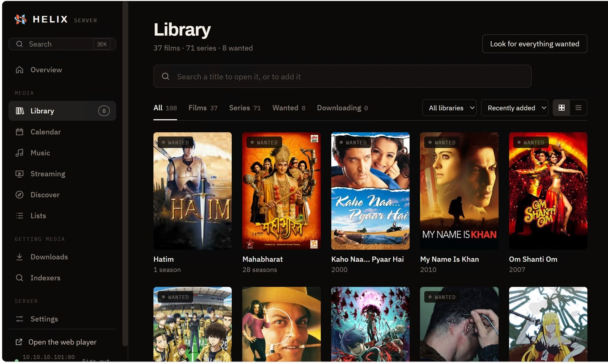
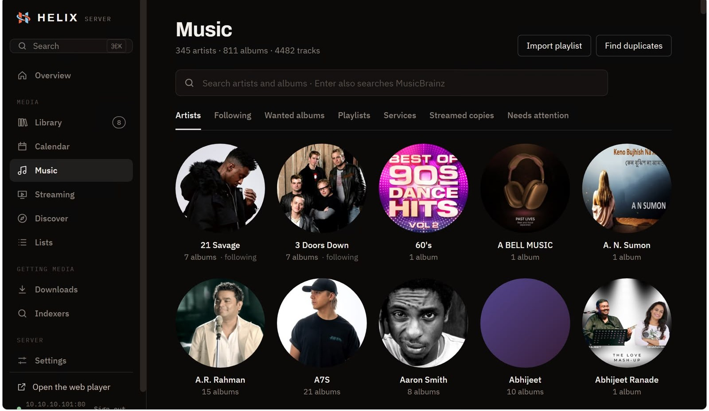

Premium Player for
Mac, Windows & Linux
Helix Desktop transforms your personal computer into an uncompromising home theater command center. Built specifically for high-refresh-rate desktop monitors, Apple Retina displays, and multi-screen workstation setups, it delivers stutter-free 4K 60fps HDR playback directly from your local hardware.
By bypassing sluggish browser sandboxes in favor of direct GPU rendering pipelines, Helix Desktop unlocks lossless multi-channel surround sound passthrough, sub-millisecond timeline seeking, and flawless subtitle rendering across macOS, Windows 10/11, and Linux.

Direct Hardware Decoding &
Zero-Buffer Streaming
Helix Desktop interfaces directly with modern graphics silicon via Apple Metal, Microsoft Direct3D 12, and Linux Vulkan/VAAPI. Even massive 80 Mbps 4K HEVC and AV1 master files play effortlessly with negligible CPU usage and near-zero battery drain on laptops.
Our asynchronous pre-fetching video pipeline streams chunks ahead of time over your local Wi-Fi, completely eliminating buffering spinners and enabling instant jump-seeking to any chapter or second.

Multi-Monitor Theater &
Precision Hotkeys
Command your viewing environment with complete precision. Dedicated keyboard shortcuts let you nudge audio delay by 10ms, toggle subtitle stylings, and jump frame-by-frame through complex scenes without ever touching a mouse.
With multi-monitor theater mode, you can send fullscreen 4K HDR playback to a connected television or home projector while browsing your media collection or adjusting playback queues on your primary laptop screen.

Engineered for Desktop Perfection
Every single feature has been refined to provide an effortless, luxury desktop cinema experience.
Native Hardware Decoding
Harnesses direct GPU hardware pipelines including Apple Silicon VideoToolbox, Windows DXVA2/D3D11, and Linux VAAPI for smooth 60fps 4K playback.
4K HDR & Dolby Vision
Full 10-bit color depth rendering with dynamic frame-by-frame tone mapping ensures deep inky blacks and vibrant highlights on modern HDR monitors.
Spatial Bitstream Passthrough
Sends uncompressed Dolby TrueHD, Dolby Atmos, and DTS-HD Master Audio bitstreams directly over HDMI to external multi-speaker surround receivers.
Customizable Hotkeys
Map custom keyboard shortcuts for seek intervals, volume booster stages, audio track switching, subtitle offset syncing, and window sizing.
Advanced Subtitle Engine
Full support for stylized SSA/ASS subtitles, embedded PGS graphics, automatic multi-language online scraping, and customizable font rendering.
Bi-Directional Library Sync
Automatically synchronizes watch history, resume positions, and playlists with your central Helix Server in real time across the home network.
Download Helix Desktop
Select your platform below. Each build’s version, size and SHA-256 are listed on the downloads page.